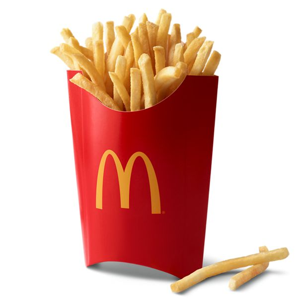

French Fries (boikot)

Description
French Fries is side dish or snack typically made from deep-fried potatoes that have been cut into various shapes, especially thin strips.
Fries are often salted and served with other items, including ketchup, mayonnaise, or vinegar.
Ingredients
- Potatoes
- Vegetable Oil (canola Oil, Corn Oil, Soybean Oil, Hydrogenated Soybean Oil, Natural Beef Flavor [wheat And Milk Derivatives])
- Dextrose
- Sodium Acid Pyrophosphate (maintain Color)
- Salt
Steps
- Materials
- Cut Potatoes. If you plan to keep the skins on (why wouldn't you!), scrub the potatoes well.
- Heat Oil. In a large pan (or an electric deep fryer), heat oil over medium-low heat.
- First Fry.
- Second Fry.